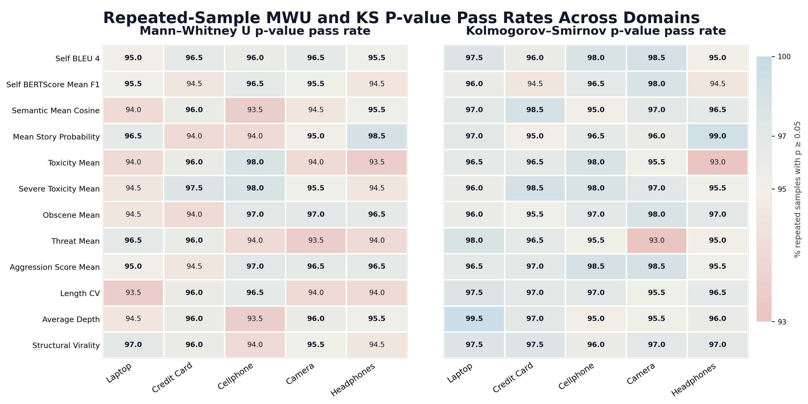
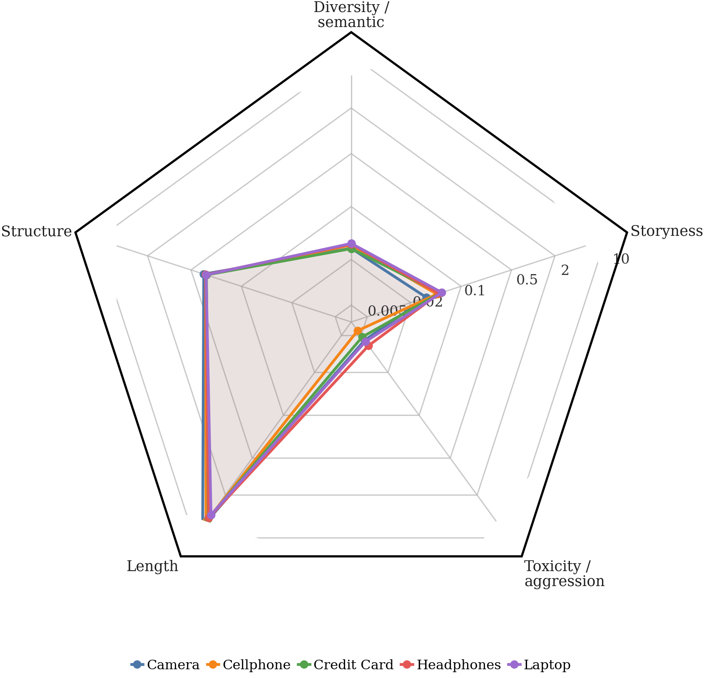
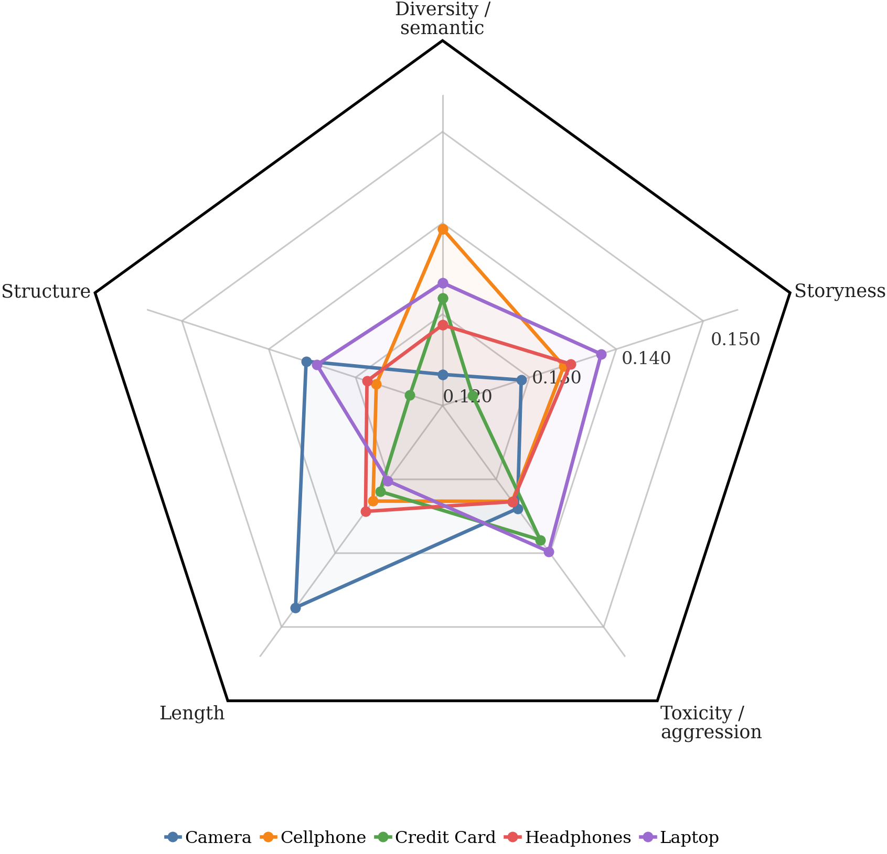
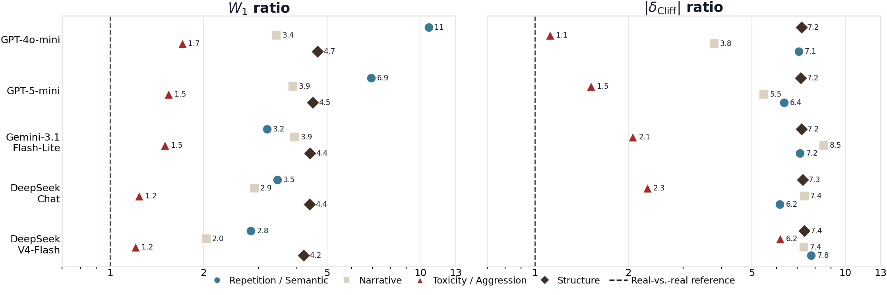

LLM agents are increasingly used to simulate human behavior and online communities. But existing work measures individual responses, role-playing, or task performance — not whether a set of generated conversations matches the content and reply-tree dynamics of real ones. MiroBench is a Reddit discussion benchmark built from 4,292 real threads across five domains, evaluating both comment-derived signals and thread structure.
LLM-based agents are increasingly used as simulators of human behavior, social interaction, and online communities. The promise: a controllable way to study how people discuss products, react to events, exchange opinions, and form group-level patterns.
But generating conversations is not enough. Existing studies focus on individual responses, controlled role-playing, or task performance in simulated environments — not whether a set of simulated discussions reproduces the content patterns and interaction dynamics of real ones, or compares progress across systems.
Reddit discussions are a practical setting for this measurement: public, topic-grounded, and multi-party. They carry advice-seeking, personal experience, disagreement, emotional tone, repeated talking points, and complexity in structure — an observable window into broader social behavior.
MiroBench combines 4,292 real Reddit threads with matched train / validation / test splits, standardized seed contexts, and a framework that compares generated and real discussions through both comment-derived signals and reply-tree structure.
Watch the difference. Both panels begin from the identical r/cellphones seed post. The left is real Reddit; the right is what current LLM agents produce under the same prompt — same topic, but a different distribution of tone, depth, and disagreement.
Same prompt, very different distributions. The real thread carries blunt disagreement, lowercase fragments, a downvoted contrarian, and a 3-deep chain. The generated thread is fluent but uniformly polite, validation-led, without disagreement, and structurally flatter. MiroBench's metrics quantify that gap thread-by-thread.
Current simulators remain distributionally mismatched to real Reddit threads even when individual comments look fluent. Prompt-based improvement only partly closes the gap. The leaderboard below — and the full per-domain breakdown — make that gap concrete, family by family.
| # | Method · Model | Diversity | Tone | Structure | Content | Toxicity | p > 0.05 ↑ |
|---|---|---|---|---|---|---|---|
| — |
Real reference
held-out test · 200 repeated samples
|
W₁ 0.016
|δ| 0.060
|
W₁ 0.034
|δ| 0.071
|
W₁ 0.165
|δ| 0.100
|
W₁ 0.074
|δ| 0.098
|
W₁ 0.004
|δ| 0.043
|
— baseline — |
| 1 |
OASIS
DeepSeek-V4-Flash
|
W₁ 0.162 ×10.1
|δ| 0.669 ×11.2
|
W₁ 0.187 ×5.5
|δ| 0.472 ×6.6
|
W₁ 1.028 ×6.2
|δ| 0.768 ×7.7
|
W₁ 0.192 ×2.6
|δ| 0.318 ×3.2
|
W₁ 0.006 ×1.5
|δ| 0.132 ×3.1
|
23 / 80
28.7%
|
| 2 |
OASIS
DeepSeek-Chat
|
W₁ 0.165 ×10.3
|δ| 0.647 ×10.8
|
W₁ 0.177 ×5.2
|δ| 0.447 ×6.3
|
W₁ 1.044 ×6.3
|δ| 0.778 ×7.8
|
W₁ 0.269 ×3.6
|δ| 0.496 ×5.1
|
W₁ 0.006 ×1.5
|δ| 0.164 ×3.8
|
12 / 80
15.0%
|
| 3 |
OASIS
GPT-5-mini
|
W₁ 0.189 ×11.8
|δ| 0.680 ×11.3
|
W₁ 0.276 ×8.1
|δ| 0.630 ×8.9
|
W₁ 1.051 ×6.4
|δ| 0.777 ×7.8
|
W₁ 0.492 ×6.6
|δ| 0.760 ×7.8
|
W₁ 0.008 ×2.0
|δ| 0.228 ×5.3
|
7 / 80
8.8%
|
| 4 |
OASIS
GPT-4o-mini
|
W₁ 0.261 ×16.3
|δ| 0.830 ×13.8
|
W₁ 0.283 ×8.3
|δ| 0.611 ×8.6
|
W₁ 1.093 ×6.6
|δ| 0.811 ×8.1
|
W₁ 0.194 ×2.6
|δ| 0.509 ×5.2
|
W₁ 0.010 ×2.5
|δ| 0.703 ×16.3
|
3 / 80
3.8%
|
| — |
OASIS
Gemini 2.5 Pro · pending
|
— | — | — | — | — | — |
| — |
OASIS
DeepSeek-V3.2 · pending
|
— | — | — | — | — | — |
Family columns show per-family averages across 5 domains: W₁ is the Wasserstein distance between generated and real Reddit distributions (lower = closer to real); |δ| is the absolute Cliff's-δ effect size. The small ×N next to each value is the model's ratio over the real reference — how many times the real-vs-real noise floor it is. ×1.0 would mean indistinguishable from sampling more real data.
The top Real reference row is computed from 200 repeated sub-samples drawn from the held-out test split — not a single train/test split — so the floor accounts for sample-size variance.
Note on Structure. For structure metrics (avg_depth,
structural_virality, length_cv),
real Reddit threads have larger values than current LLM outputs — bigger is closer to real. The W₁ and |δ|
columns still measure distance (so lower is still better), but the underlying gap is one-sided:
LLMs under-build thread structure.
The p > 0.05 column counts (metric × domain) cells where Mann–Whitney U cannot reject equal distributions, out of 16 metrics × 5 domains = 80 cells. All models run under OASIS with the same task setup.
These figures show the noise floor of the benchmark itself — i.e., the gap you observe when comparing one half of real Reddit data to the other half. Any model's score on the leaderboard (or the full per-domain results) should be read against this floor. These figures are not part of the leaderboard; they characterise the measurement.

Repeatedly drawing two equal-sized samples from the real distribution and running Mann–Whitney U / Kolmogorov–Smirnov: ≈95% of comparisons return p > 0.05, which is the false-positive rate we should expect by construction. This is the "100% match" line that no model has approached.



For each family, the dotplot shows the ratio of a model's average W1 (and |δ|) to the real-vs-real baseline. A ratio of 1.0 would mean a model is indistinguishable from sampling more real data; current models sit at 2×–11× the floor, with the largest gaps on Structure and Repetition.
Core install runs scoring & comparison; the [generation] extra pulls in camel-oasis + camel-ai for the mirobench generate command.
$ git clone https://github.com/yyu6/MiroBench.git $ cd MiroBench $ pip install -e ".[generation]"
The disagreement scorer uses the Stance_Rel RoBERTa checkpoint from Luo et al. — the only scorer needing a manual download. The other eight scorers auto-fetch their models from HuggingFace on first use.
Download the checkpoint from the original authors' Google Drive and unzip into ./Stance_Rel/RoBERT_rel_1.5e-05/ inside your working directory. If absent, the disagreement scorer is skipped and the remaining eight still run.
Set LLM_API_KEY in a .env file (template at .env.example), then run:
$ mirobench generate path/to/products.json \ --agents 30 --rounds 30 --seed-posts 3 \ --output-dir artifacts/simulations/ \ --discussion-backbone vanilla_oasis
Runs the six-stage pipeline (load → analyse → personas → build OASIS config → run OASIS → export discussion.json). Use --discussion-backbone geo_patched to enable MiroBench's runtime patches over the OASIS Reddit env, or --overlay best_overlay.json to apply a calibration overlay produced in step 6.
Already have discussion.json files from another simulator (e.g. OASIS's own Reddit cookbook)? Skip step 3 — MiroBench accepts any input that follows the discussion.json schema.
$ mirobench score my_threads/ --device cpu
Each thread is a directory holding one discussion.json file; see example_thread_format.json for the JSON schema. The command writes my_threads/thread_scores.csv with one row per thread and 61 columns covering all nine scorer families. A 5-row schema sample lives at example_thread_scores.csv — the same file mirobench compare accepts verbatim.
Sample size. MWU and KS are non-parametric rank tests; below ~30 threads the p-values get noisy. Use ≥ 50 threads per domain for a meaningful similarity ratio (the paper's leaderboard uses 200 per model × domain).
$ mirobench compare my_threads/thread_scores.csv \ --core-only \ --model-name "my-model"
The command writes mirobench_comparison.csv with one row per (metric × domain). Each row carries two primary readings — mwu_p_value and ks_p_value (p > 0.05 means indistinguishable from real Reddit) — and two secondary ones — cliffs_delta and wasserstein (how far off when the p-value rejects).
The terminal also prints a headline similarity ratio per domain, e.g. Similarity (MWU p > 0.05): 5/12 (42%). A simulator "matches" a domain as its ratio approaches the ≈ 95% real-vs-real noise floor shown in §03.
$ python -m calibration \ --real-train-csv mirobench/data/credit_cards/reference_scores/thread_scores_train.csv \ --real-val-csv mirobench/data/credit_cards/reference_scores/thread_scores_val.csv \ --real-test-csv mirobench/data/credit_cards/reference_scores/thread_scores_test.csv \ --few-shot-dir mirobench/data/credit_cards/real_threads \ --products-json mirobench/data/credit_cards/products/product_descriptions.json \ --output-dir calibration_output/ \ --calibration-model gpt-4o-mini \ --iterations 12 --candidates 5 --device cpu
Outputs land in calibration_output/: before_calibration/ (Phase 0 baseline), iterations/ (Phase 1 per-iteration data), best_overlay.json (chosen prompt overlay), and after_calibration/ (Phase 2 final evaluation). Requires an OPENAI_API_KEY and an OASIS install for the candidate simulations.
Full flag reference in the README.
We also welcome citations from any work that builds on the data, the evaluation framework, or the reference distributions released with this benchmark.
@article{yu2026mirobench, title = {MiroBench: Benchmarking Realism in Agentic Simulation of Real-world Discussions}, author = {Yu, Yaoning and Yu, Ye and Luo, Haojing and Wang, Haohan}, year = {2026}, url = {https://github.com/yyu6/MiroBench} }